EQUITY IMPLIED VOLATILITY
The main purpose of the class is to convert raw market equity volatilities into volatilities with desired maturities, strikes, volatility types and strike bases, which can then be used as initial values for the RSG/ESG engine
Contents
%MATLAB CODE %%%%%%%%%%%%%%%%%%%%%%%%%%%%%%%%%%%%%%%%%%%%%%%%%%%%%%%%%%%%%%%%%%%%%%%%%%% classdef bootstrap_equityIV < prursg.Bootstrap.BaseBootstrapAlgorithm
How to Use the Class
This class inherits the properties and methods from the parent class [BaseBootstrapAlgorithm].
It contains two methods, one is [Bootstrap] and the other is [Calibrate].
New properties have been defined and the default method [Bootstrap] has been overwritten.
The re-defined [Bootstrap] method links together the three Equity Implied Volatility bootstrap steps, namely, [bsEquityStrikeBasis], [bsEquityIV_StochRateEffect] and [bsEquityVolExtrapolation].
Input a raw market volatility surface and a set Forward Index Prices into [Bootstrap]. Bootstrap method then returns a new volatility surface with the specified maturities, strikes, volatility type and strike basis.
Method [Calibrate] calibrates parameters which are then used in bootstrap methods. We have not created a calibrate method.
Properties
These are global parameters which are available to all methods in this class. They are all single values.
[newDataSeriesObject] - initial set-up of the bootstrap object
[Methods] - bootstrap method
[outputfreq] - a string that lists the number of monthly, quarterly, semi-annual, and annual output intervals
[ouputfrequencyprofile] - determines the output frequency of the DataSeriesObject
[Moneyness] - measured as a percentage of option price
[LTEquityAMean] - 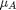, the arithmatic mean return in the long term
[LTEquityAStdDev] - 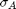, the arithmatic volatility in the long term
[ExpDecayFactor] - 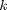, represents the speed with which the standard deviation of returns reverts to its long term level. It controls the exponential decay from the last liquid point to the long-term target
[llpMaturity] - 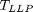 maximum maturity at which equity volatility is liquid
[llpminStrike] - minimum moneyness at which equity volatility is liquid
[llpmaxStrike] - maximum moneyness at which equity volatility is liquid
[IRMeanReversionSpeed] - rate 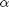 at which the short rate reverts back to mean
[IRVolatility] - interest rate volatility 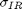
[Equity_IR_Correlation] - correlation 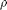 between equity and interest rate
[ProxyMethod] - method to apply a proxy, e.g. "linear"
[ProxyCurrency] - currency to which the proxy method is applied to
[ProxyParam1] - parameter used in the proxy calculation
[ProxyParam2] - parameter used in the proxy calculation
%MATLAB CODE %%%%%%%%%%%%%%%%%%%%%%%%%%%%%%%%%%%%%%%%%%%%%%%%%%%%%%%%%%%%%%%%%%%%%%%%%%% properties newDataSeriesObject Methods outputfreq ouputfrequencyprofile % Strike Moneyness Levels Moneyness % Equity Return Parameters LTEquityAMean LTEquityAStdDev ExpDecayFactor % Liquidity Points llpMaturity llpminStrike llpmaxStrike % Interet Rate Parameters IRMeanReversionSpeed IRVolatility Equity_IR_Correlation % Equity IV method EquityIVMethod StrikeMethod % Proxy Methods ProxyMethod ProxyCurrency ProxyParam1 ProxyParam2 % Start & End Points startterm endterm end %%%%%%%%%%%%%%%%%%%%%%%%%%%%%%%%%%%%%%%%%%%%%%%%%%%%%%%%%%%%%%%%%%%%%%%%%%%
List of Methods
This bootstrap class introduces the following methods:
1) [Bootstrap()] - Function transforms a raw market volatility surface into a surface with the specified maturities, strikes, volatility type and strike basis.
2) [Calibrate()] - Function calibrates parameters which are then used in bootstrap methods
%MATLAB CODE %%%%%%%%%%%%%%%%%%%%%%%%%%%%%%%%%%%%%%%%%%%%%%%%%%%%%%%%%%%%%%%%%%%%%%%%%%% methods
function obj = bootstrap_equityIV () obj = obj@prursg.Bootstrap.BaseBootstrapAlgorithm(); end %%%%%%%%%%%%%%%%%%%%%%%%%%%%%%%%%%%%%%%%%%%%%%%%%%%%%%%%%%%%%%%%%%%%%%%%%%%
Details of Methods
_______________________________
1) [Bootstrap()]
'''''''''''''''''''''''''''''''''''''''''''''''''''''''''''''''''''''''''''''''''''''
Description
Function links together the three Equity Implied Volatility bootstrap steps, namely, [bsEquityStrikeBasis], [bsEquityIV_StochRateEffect] and [bsEquityVolExtrapolation].
It converts a raw market equity volatility surface into a surface with pre-defined maturity and strike profiles and in the required volatility type and on the required strike basis.
Inputs
[DataSeriesIn] - The first data series is assumed to be the volatility surface and the second is assumed to be the forward index prices.
Data Type: 2-dim array
Outputs
[results] - The resulting volatility surface after extrapolation
Data Type: 2-dim array
Calculation
STEP 0: Set-up the problem. Dataseries objects are reference type objects, therefore we will take a local copy
STEP 1: Create Extrapolation Object
STEP 2: Initialise Data. Turn DataSeries values into absolute values. Identify whether to apply truncation to the volatility surface
STEP 3: Apply proxy adjustments if the input volatility 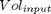 is a proxy. E.g. if the proxy rule is "linear", proxy parameters are 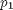 and 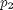, then the volatility after proxy 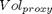 is,
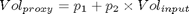
STEP 4: Sort volatility surface by strike then maturity. Check the name of each axis and assign data appropriately
STEP 5: Convert forward volatilities to spot volatilities, if necessary, using the function [CreateSpotVolSurfaceFromFwdVolSurface()] in the class [bsEquityForwardVolExtrapolation]
STEP 6: Transform current strike basis to forward strike basis, if necessary, using the function [CreateNewIVMatrix()] in the class [bsEquityStrikeBasis]
STEP 7: This is the main calculation step. It calls the function [CreateExtrapolatedSurface()] in the class [bsEquityForwardVolExtrapolation] to apply interpolation and extrapolations to the raw volatility surface. That gives us a spot volatility surface on forward strike basis with the required output maturity and strike profiles.
If the output volatility type is "fwdvol", it calls the function [CreateFwdVolSurfaceFromSpotVolSurface()] again to convert the surface into a forward volatility surface.
If the output strike type is "fwdstrike", it calls the function [CreateNewIVMatrix()] again to convert the surface into a volatility surface on a forward strike basis
STEP 8: Update Data-Series axis & properties axis
STEP 9: Assign DataSeries object to [results]
%MATLAB CODE %%%%%%%%%%%%%%%%%%%%%%%%%%%%%%%%%%%%%%%%%%%%%%%%%%%%%%%%%%%%%%%%%%%%%%%%%%% function results = Bootstrap(obj,DataSeriesIn) %Step 0: Set-Up Problem numOfDataSeries = size(DataSeriesIn,2); inumberOfDates = size(DataSeriesIn(1).dates,1); obj.ouputfrequencyprofile = Bootstrap.Bsfrequencyprofile ... (obj.outputfreq, obj.endterm).AdjustedIntervalArray'; newSortDataSeries=Bootstrap.BsSort(); obj.newDataSeriesObject = newSortDataSeries.SortDataSeries... (DataSeriesIn(1).Clone); for i =2 : numOfDataSeries obj.newDataSeriesObject = [obj.newDataSeriesObject ... newSortDataSeries.SortDataSeries(DataSeriesIn(i).Clone)]; end %STEP 1: Create Extrapolation Object newEquityVolextrap = Bootstrap.bsEquityForwardVolExtrapolation ... (obj.LTEquityAMean, obj.LTEquityAStdDev, obj.ExpDecayFactor, ... obj.llpMaturity, obj.llpminStrike, obj.llpmaxStrike, ... obj.IRMeanReversionSpeed, obj.IRVolatility, ... obj.Equity_IR_Correlation); newobject = Bootstrap.bootstrap_ZCBtoSwapRate; NewStrikeMoneyness = newobject.createArrayfromCSVstring(obj.Moneyness); %STEP 2 Initialise Data % obj.newDataSeriesObject = DataSeriesIn(1).Clone(); Methodindices = find(obj.EquityIVMethod == '_'); obj.Methods = { obj.EquityIVMethod(1 : Methodindices(1) -1), ... obj.EquityIVMethod((Methodindices(1)+1) : Methodindices(2) -1), ... obj.EquityIVMethod((Methodindices(2)+1) : end)}; for j=1:numOfDataSeries if strcmp(lower(obj.newDataSeriesObject(j).units) , 'percent') for i=1:inumberOfDates obj.newDataSeriesObject(j).values{i,1} = ... obj.newDataSeriesObject(j).values{i,1} ./ 100; end end end if strcmp(lower(obj.StrikeMethod) , 'truncate') obj.StrikeMethod ='true'; else obj.StrikeMethod ='false'; end %STEP 3 Apply Proxy Adjustments if strcmp(lower(obj.ProxyMethod) , 'linear') for i=1: inumberOfDates obj.newDataSeriesObject(1).values{i,1}= obj.ProxyParam1 + ... obj.ProxyParam2 .* obj.newDataSeriesObject(1).values{i,1}; end end %STEP 4 Sort volatility surface by strike then maturity if strcmp(DataSeriesIn(1).axes(1).title, 'Moneyness') && ... strcmp(DataSeriesIn(1).axes(2).title, 'Term') OptionStrikes = cell2mat(obj.newDataSeriesObject(1).axes(1).values); OptionMaturities = cell2mat(obj.newDataSeriesObject(1).axes(2).values); VolatilitySurface = cell(inumberOfDates, 1); for i=1:inumberOfDates VolatilitySurface{i,1} = obj.newDataSeriesObject(1).values{i,1}'; end elseif strcmp(DataSeriesIn(1).axes(1).title, 'Term') && ... strcmp(DataSeriesIn(1).axes(2).title, 'Moneyness') OptionStrikes = cell2mat(obj.newDataSeriesObject(1).axes(2).values); OptionMaturities = cell2mat(obj.newDataSeriesObject(1).axes(1).values); VolatilitySurface = cell(inumberOfDates, 1); for i=1:inumberOfDates VolatilitySurface{i,1} = obj.newDataSeriesObject(1).values{i,1}; end else assert( 'Axis Titles of the input data do not match predefined values'); end %STEP 5: Convert Forward Vols to Spot vols if necessary if strcmp( DataSeriesIn(1).volatility_type , 'fwdvols') for i=1:inumberOfDates VolatilitySurface{i,1}=CreateSpotVolSurfaceFromFwdVolSurface... (VolatilitySurface{i,1}, OptionMaturities); end end %STEP 6: Forward Strike Adjustment if necessary if strcmp( obj.newDataSeriesObject(1).strike_type, 'spotstrike') && ... (numOfDataSeries > 1); ForwardIndexMaturities= cell2mat(obj.newDataSeriesObject(2). ... axes(1).values); for i=1: inumberOfDates ForwardIndexPrices = obj.newDataSeriesObject(2).values{i,1}; newForwardStrikeBasis = Bootstrap.bsEquityStrikeBasis ... (VolatilitySurface{i,1}, OptionMaturities, OptionStrikes,... ForwardIndexPrices, ForwardIndexMaturities, OptionStrikes); VolatilitySurface{i,1}=newForwardStrikeBasis.CreateNewIVMatrix... ('fwdstrike',obj.StrikeMethod); end end %Step 7: Calculate values for i=1: inumberOfDates newsurface = newEquityVolextrap.CreateExtrapolatedSurface ... (VolatilitySurface{i,1}, OptionMaturities, OptionStrikes, ... obj.ouputfrequencyprofile, NewStrikeMoneyness, obj.StrikeMethod); if strcmp(obj.Methods{1}, 'spotstrike') && (numOfDataSeries > 1); % Convert Forward Strike Surface to Spot Strike Surface newForwardStrikeBasis = Bootstrap.bsEquityStrikeBasis ... (newsurface, obj.ouputfrequencyprofile, NewStrikeMoneyness,... ForwardIndexPrices,ForwardIndexMaturities,NewStrikeMoneyness); newsurface = newForwardStrikeBasis.CreateNewIVMatrix ... ('spotstrike',obj.StrikeMethod); end if strcmp(obj.Methods{3} , 'fwdvol') % Convert spot vols to fwd vols newsurface = newEquityVolextrap. ... CreateFwdVolSurfaceFromSpotVolSurface(newsurface, ... obj.ouputfrequencyprofile); end if strcmp(DataSeriesIn(1).axes(1).title , 'Moneyness') && ... strcmp( DataSeriesIn(1).axes(2).title, 'Term') obj.newDataSeriesObject(1).values{i,1} = newsurface'; else obj.newDataSeriesObject(1).values{i,1} = newsurface; end end %Step 8 :: Update Data-Series Axis & Properties Axis if strcmp( DataSeriesIn(1).axes(1).title , 'Moneyness') && ... strcmp( DataSeriesIn(1).axes(2).title , 'Term') obj.newDataSeriesObject(1).axes(1).values = ... num2cell(NewStrikeMoneyness); obj.newDataSeriesObject(1).axes(2).values = ... num2cell(obj.ouputfrequencyprofile); else obj.newDataSeriesObject(1).axes(2).values = ... num2cell(NewStrikeMoneyness); obj.newDataSeriesObject(1).axes(1).values = ... num2cell(obj.ouputfrequencyprofile); end obj.newDataSeriesObject(1).Name = ''; obj.newDataSeriesObject(1).description = ... 'Derived using the iMDP Forward Vol Extrapolation Method'; obj.newDataSeriesObject(1).strike_type = obj.Methods{1}; obj.newDataSeriesObject(1).volatility_measure =obj.Methods{2}; obj.newDataSeriesObject(1).volatility_type = obj.Methods{3}; obj.newDataSeriesObject(1).source = 'iMDP'; obj.newDataSeriesObject(1).units ='absolute'; %Step 9: Assign DataSeries Object to Results results =obj.newDataSeriesObject(1); end %%%%%%%%%%%%%%%%%%%%%%%%%%%%%%%%%%%%%%%%%%%%%%%%%%%%%%%%%%%%%%%%%%%%%%%%%%%
_______________________________
2) [Calibrate()]
'''''''''''''''''''''''''''''''''''''''''''''''''''''''''''''''''''''''''''''''''''''
Description
Function calibrates parameters which are then used in bootstrap methods
See class [BaseBootstrapAlgorithm] for details
%MATLAB CODE %%%%%%%%%%%%%%%%%%%%%%%%%%%%%%%%%%%%%%%%%%%%%%%%%%%%%%%%%%%%%%%%%%%%%%%%%%% function Calibrate(obj, DataSeriesIn, ParametersIn) end %%%%%%%%%%%%%%%%%%%%%%%%%%%%%%%%%%%%%%%%%%%%%%%%%%%%%%%%%%%%%%%%%%%%%%%%%%%
end
end